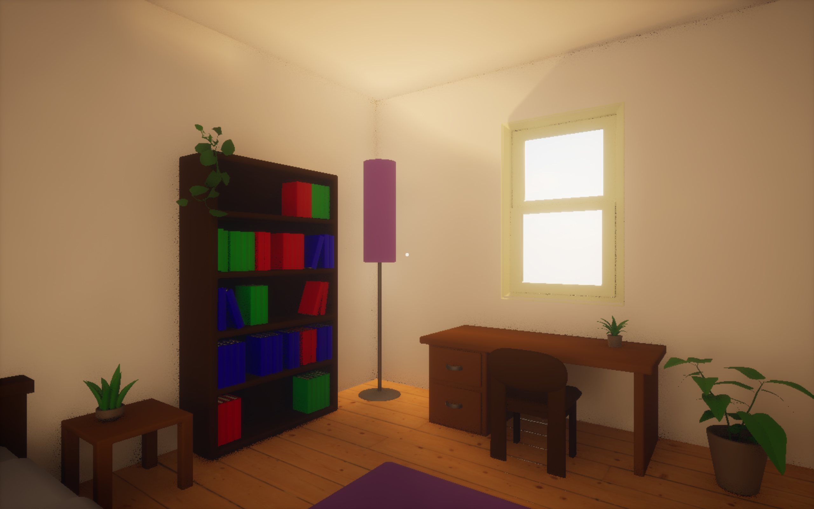

O5tium
O5tium est un court puzzle game dans lequel le joueur passe 5 jours enfermé dans une chambre à chercher un moyen de sortir. Chaque journée représente une étape de la dépression.
- Date de création : Novembre 2024
Mes accomplissements
- Conception des mécaniques de jeu.
- Conception du niveau 3.
- Conception du sound design.
Crédits
L'équipe E
- Valentin Noblet
- Wav_le_hib
- Elisa Folliet
- Mewaska
- Antoine Belliard
Musique
- Legende_urbaine
Galerie
